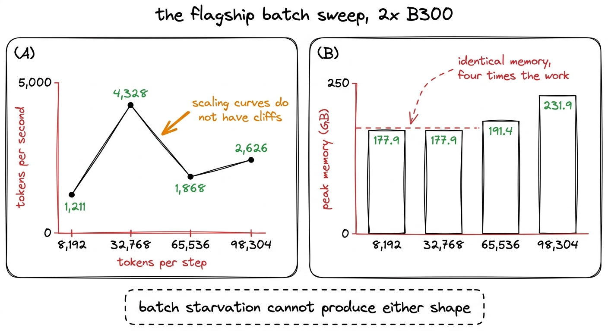
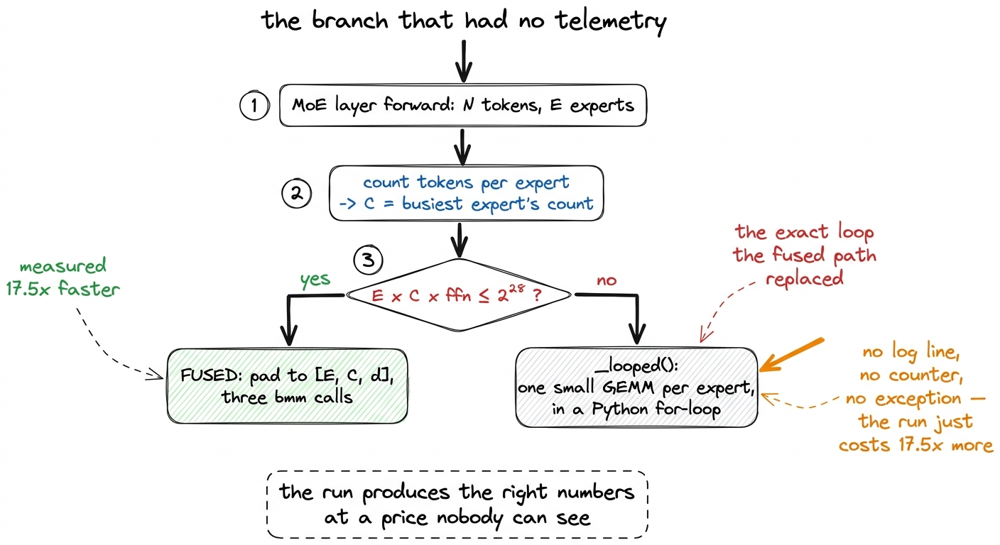
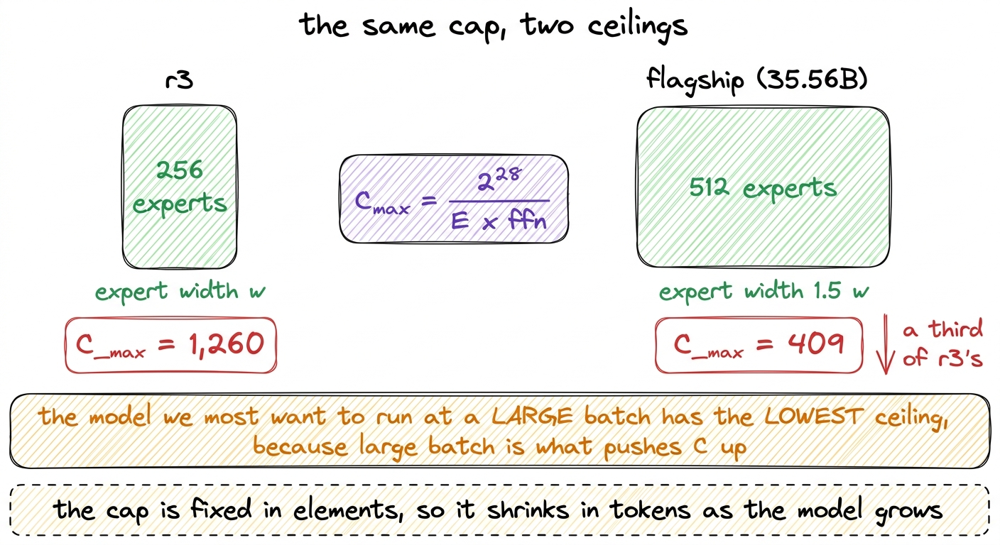
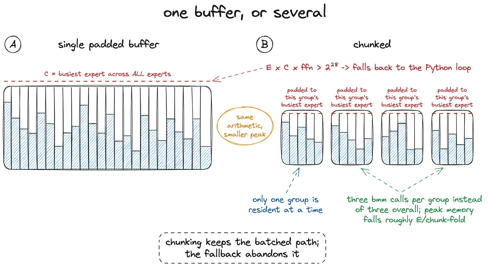
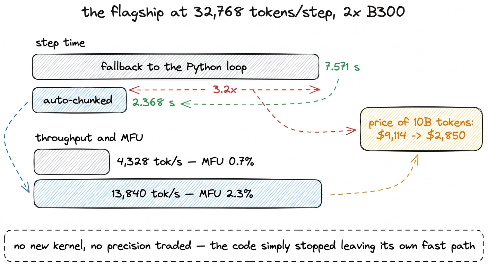
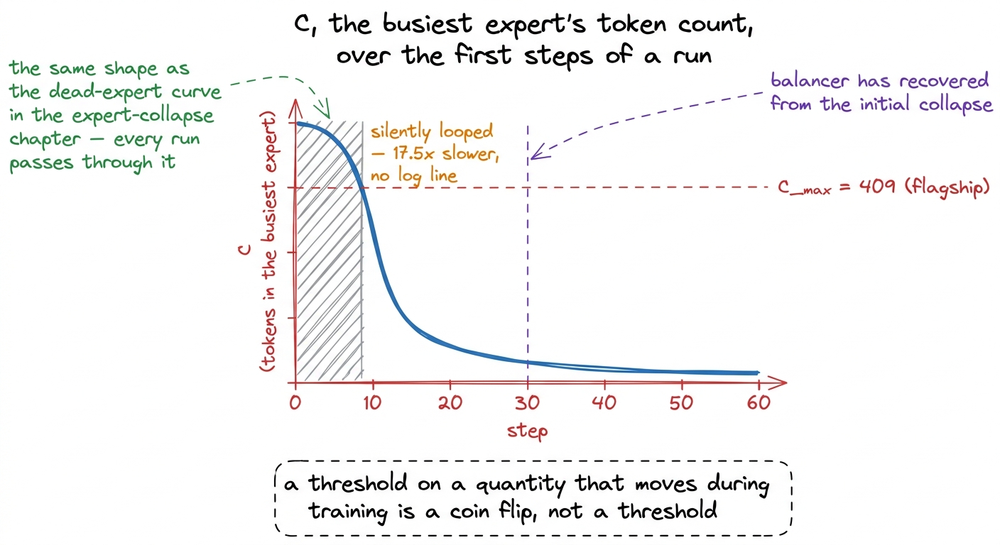

The silent fallback
A non-monotonic throughput curve and memory that did not move when the batch did — two shapes no scaling story can produce, and the capped buffer quietly reverting 23 layers to the loop it was written to replace.
Everything in this chapter was measured on the flagship: the 35.56-billion-parameter top rung, running on 2x B300. It is not r1. r1 trained on a single H200 and was never sharded, and the numbers below would not have appeared on it at all, which is part of what makes them worth writing down.
With FSDP2 finally training the flagship end to end, we could measure its throughput for the first time. At 8,192 tokens per step it came out at 1,211 tokens per second, an MFU of 0.2%, against the 3.6% r3 recorded on a B200.1 MFU here is computed against the B300's own peak, as it always is. Attempt 13 established that MFU numbers are only comparable across runs on the same hardware, because the denominator is a property of the card rather than of the model; normalising r3's 3.6% to the H200's peak gives about 8.2%. The comparison to r3 is therefore indicative rather than exact, and the shape of what follows does not depend on it.
That is a bad number even by the standards of a project whose one completed run, r1 on a single H200, sustained 27,600 to 28,900 tokens per second at 2.4 to 2.5% MFU. It also arrived with an explanation already attached.
The story that fit
At 8,192 tokens per step across two ranks, each card sees 4,096 tokens, which is a small fraction of the 131,072 tokens per step r1's real run used. Batch starvation is the obvious reading, and it was consistent with everything the MFU investigation had learned up to that point.
Batch had been the strongest lever three times running, in every case measured on r2, the 307M-active rung, on one H200. Attempt 8's fused situ kernel was not faster at equal batch — 5.5% against 5.6% — and won entirely by freeing 40 GB, which allowed a 50% larger microbatch of 24,576 tokens and took MFU to 7.7% at 41,294 tokens per second. Attempt 5's float32 fix was worth 0.1 percentage points of MFU directly and 40 GB of memory indirectly. Attempt 4's chunking of the expert buffer was rejected because it saved about 5% of memory and MFU fell.
Three attempts, one conclusion: on r2, memory buys batch and batch buys throughput. Two memory fixes had just landed on the flagship for exactly that reason. So we swept the batch and expected the curve to climb.
The sweep
| tokens/step | step time | tokens/s | MFU | peak memory |
|---|---|---|---|---|
| 8,192 | 6.76 s | 1,211 | 0.2% | 177.9 GB |
| 32,768 | 7.57 s | 4,328 | 0.7% | 177.9 GB |
| 65,536 | 35.09 s | 1,868 | 0.3% | 191.4 GB |
| 98,304 | 37.44 s | 2,626 | 0.4% | 231.9 GB |
Throughput rises by a factor of 3.6, then falls by more than half, then partly recovers.

figure rendering · The sweep that was expected to climb. Both panels are the flagship onBoth shapes are impossible for the story we were telling.
Scaling curves do not have cliffs. A batch-starved model given twice the batch does not become more than twice as slow, which is what 4,328 falling to 1,868 tokens per second amounts to. Smooth resource curves bend, saturate and plateau; they do not reverse. A reversal means something switched.
If memory were the constraint, memory would move. Peak memory at 8,192 and at 32,768 tokens per step is the same number to one decimal place, 177.9 GB, for four times the work.2 177.9 GB of 287.4 available on the two cards, 62%, is also the figure recorded when FSDP2 was verified end to end on the flagship over four steps. The agreement is not a coincidence; it is the same configuration, and it means the activation memory the batch was supposed to consume was not being consumed. Identical memory across a fourfold change in work is the same signature that exposed gradient_checkpointing_enable() as a no-op earlier in this project, where memory read 76.7 GB with it off and 76.8 GB with it on. A quantity that should have moved and did not is evidence about the code path, not about the resource.
Neither of these was found by thinking harder about the batch. They were found by putting four rows in a table and looking at the columns.
What it actually was
The fused expert dispatch, the change that produced the 17.5x in attempt 1 on r2, taking MFU from 0.1% to 4.1%, packs tokens into a dense [E, C, d] buffer where E is the expert count and C is the busiest expert's token count. Padding is exact rather than lossy: unused slots hold zeros whose outputs are never gathered, so no token is dropped. The cost is that the buffer's size is E x C x ffn, and C grows with routing imbalance.
That buffer carries a cap:
# Cap on the padded buffer, in elements. Beyond this the routing is imbalanced
# enough that padding wastes more than the loop costs.
MAX_PAD_ELEMS = 1 << 28The cap is a reasonable piece of engineering. Without it, a run whose routing goes lopsided at hour six allocates a buffer large enough to exhaust the card and dies. What it did above the cap was fall back to _looped, the per-expert Python loop the fused dispatch had been written to replace for a measured factor of 17.5.
And the fallback printed nothing.

figure rendering · The dispatch had two implementations with a large spread between them,The run was correct throughout. Both paths compute the same function, verified against each other in value and in gradient. It simply cost an order of magnitude more, and no output distinguished the two cases.
The ceiling, and who hits it
Rearranging the cap gives the largest tolerable busiest-expert count directly:
C_max = 2^28 / (E x ffn)Two rungs, two answers. For r3, with 256 experts, C_max is 1,260. For the flagship, which has twice the experts and half again the expert width, C_max is 409.

figure rendering · The cap is a constant number of elements, so the models with the mostThe ordering runs the wrong way. A larger model needs a larger batch to be efficient, a larger batch pushes C up, and the larger model has the lower ceiling for C. The flagship's ceiling is a third of r3's while its appetite for batch is larger, which is why the cliff appeared on the flagship and had never appeared on any rung of the ladder.
At 32,768 tokens per step, every one of the flagship's 23 MoE layers quietly switched to the Python loop.3 23 rather than 24 because layer 0 is dense, following K3's own first_k_dense_replace: 1. Every layer switching together is what makes the effect so clean in the timing data: this is not a fraction of the model degrading, it is the whole expert stack changing implementation on the same step.
That is the cliff. It also explains the partial recovery at 65,536 and 98,304 tokens: the loop's per-expert overhead is fixed per step, so spreading it over more tokens improves tokens per second while leaving the run firmly in the slow path.
The fix is not a bigger cap
Raising MAX_PAD_ELEMS removes the symptom and restores the failure the cap was written to prevent. The buffer would grow with imbalance until a run that had been training for hours ran out of memory.
The alternative is to keep the fused structure and make the buffer smaller: process experts in groups small enough to stay under the cap, padding each group to its own busiest expert rather than to the global maximum. The three batched matrix multiplies remain; there are simply a few more of them.
auto = None
if chunk is None and E * C * self.ffn_dim > MAX_PAD_ELEMS:
auto = max(1, MAX_PAD_ELEMS // max(1, C * self.ffn_dim))
if auto >= E:
auto = None
else:
# Never silent again. `fused_moe.dispatch_stats(model)` reports
# this, and the training loop puts it in telemetry.
self._auto_chunks = getattr(self, "_auto_chunks", 0) + 1
self._last_chunk = auto
self._last_C = C
chunk = chunk if chunk is not None else autoThe group size is derived from the same arithmetic as the ceiling, so the buffer lands just under the cap by construction rather than by a tuned constant. If the derived group size is at least E the chunking is unnecessary and the code takes the plain fused path.

figure rendering · The single buffer pads every expert to the global busiest one. ChunkinChunking is not free, and we already knew its price. Attempt 4 had measured it on r2 and rejected it: about 5% of memory saved, and MFU fell. Against a factor of 17.5 for the loop, that is not a close decision.4 The batched dispatch had been checked against the looped reference when it was written in attempt 1, agreeing to 3.9e-08 in value and 4.1e-08 in gradient. A path taken automatically under load is exactly the path that most needs that kind of check, because nothing about a run will tell you when it was taken.
What it was worth
Measured on the flagship at 32,768 tokens per step:
| dispatch | step time | tokens/s | MFU |
|---|---|---|---|
| fallback to the Python loop | 7.571 s | 4,328 | 0.7% |
| auto-chunked | 2.368 s | 13,840 | 2.3% |
A factor of 3.2, from deleting a fallback. No kernel was written, no precision was traded, no hyperparameter moved. The change was to keep the code on the path it already had.
The cost side moves with it. Two B300s cost $7.10 an hour each, so pricing 10 billion tokens at the two throughputs takes the bill from about $9,114 to $2,850, which is the difference between a training stage being unaffordable and being roughly what the plan had budgeted for it.

figure rendering · The measured effect of removing the fallback. Both rows are the same mWhy it helped below the cap
The arithmetic above says the flagship tolerates a busiest-expert count of 409. At 32,768 tokens per step across two ranks the average expert should sit comfortably under that. The fix helped anyway, and the reason is in the word "busiest".
The cap is not on the mean load. It is on the maximum, and the maximum is a function of routing imbalance, which is not constant during training. As the chapter on expert collapse established, imbalance is at its worst in the opening steps of every run in this project: the router has no opinion, top-k selection concentrates on a handful of experts, and the aux-loss-free balancer takes roughly 30 steps to pull load back. Load imbalance on the flagship's own verified FSDP2 steps read 3.3, and on a healthy r1 it drifted from 2.36 to 4.0 across 38,147 steps. Early in a run it is far higher than either.
So C sat above 409 exactly while the model was warming up, and the run spent that period in the slow path without saying so.

figure rendering · The cap is on the busiest expert, and the busiest expert is at its busThe general form of this is worth stating plainly. A threshold compares a fixed constant against a quantity that varies with the state of training. Whether the run is on the fast path or the slow one is then decided by routing statistics that change from step to step, and the decision can flip in either direction without any code change and without any output. A threshold on a moving quantity is not a threshold.
Making it observable
The code change that matters most in this chapter is four lines long and does not affect throughput:
def dispatch_stats(model) -> dict:
"""Did any MoE layer leave the single-buffer fused path, and how far?"""
layers = [m for m in model.modules() if isinstance(m, FusedExperts)]
auto = [m for m in layers if getattr(m, "_auto_chunks", 0)]
if not auto:
return {"moe_layers": len(layers), "auto_chunked_layers": 0,
"min_chunk": None, "max_C": None}
return {"moe_layers": len(layers),
"auto_chunked_layers": len(auto),
"min_chunk": min(getattr(m, "_last_chunk", 0) for m in auto),
"max_C": max(getattr(m, "_last_C", 0) for m in auto)}It reports how many MoE layers left the single-buffer path, how finely they had to be chunked, and the largest busiest-expert count observed. Those go into the same telemetry stream as loss, dead-expert fraction and load imbalance, and they are read the same way. A run that starts chunking heavily is now visible from outside the container.5 The 3.2x was measured but never spent. The flagship was launched on 6 August 2026 and failed with 69.5% dead experts and load imbalance of 74 to 85, stalling at step 890 of 76,294 having spent $48.33. The dispatch fix is a real result about a real model; it is not a result about a finished training run, and this book does not present it as one.
The two transferable parts
A fallback path that is slower by an order of magnitude has to be observable. Fallbacks are ordinary and often correct: this one existed to stop a padded buffer from exhausting a card mid-run, which is a real failure it really prevents. What made it expensive was that taking it produced no signal. Every check a training run performs — loss, gradient norm, dead experts, equivalence tests — passed the whole time, because all of them were true. A silent performance fallback is a correctness bug wearing a different hat: the run produces the right numbers, at a price nobody agreed to and nobody can see. The rule that follows is narrow enough to apply mechanically. If two code paths compute the same function with a large spread in cost, and something other than the programmer chooses between them at runtime, the choice belongs in telemetry.
When a measurement disagrees with a story, the shape of the disagreement usually names the cause. The batch-starvation explanation was not careless. It was consistent with four prior attempts, it matched the hardware configuration, and it survived because it was plausible. It did not die to an argument. It died to two shapes in a four-row table: a curve that reversed, and a memory column that failed to move. Neither of those requires knowing anything about mixtures of experts. A reversal in a resource curve says an implementation switched. A resource that does not respond to the thing that should consume it says the consumption is not happening. Both point at the code path rather than at the resource, which is where the answer was.
Most of the sixteen MFU attempts describe measurements that killed a hypothesis and stopped there. This is the one where the measurement also said, in its shape, where to look next.